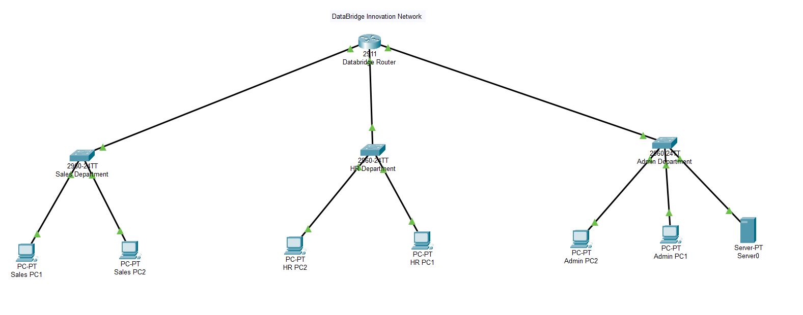
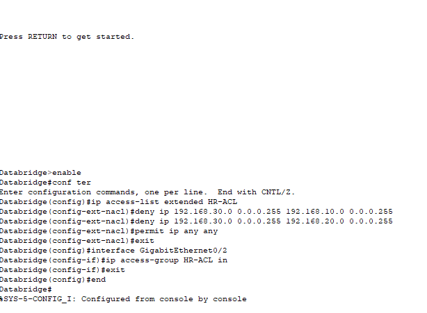

Office Network and ACL Security Implementation
Designing a secure multi-department corporate network using routing, subnetting, and ACL security enforcement.
Project Overview
Organizations rely on segmented networks to prevent lateral movement during cyber attacks. This lab simulates a real corporate office where departments must communicate while maintaining security boundaries.
View project files on GitHub: https://github.com/imhardeyboi/imhardeyboi.github.io/tree/main/projects/multi-department-office-network
- 3 Departments: Admin, Sales, HR
- Router-based inter-VLAN routing
- Access Control Lists for traffic restriction
- Connectivity and security validation
Network Architecture
Subnet Design
| Department | Subnet | Gateway |
|---|---|---|
| Admin | 192.168.10.0/24 | 192.168.10.1 |
| Sales | 192.168.20.0/24 | 192.168.20.1 |
| HR | 192.168.30.0/24 | 192.168.30.1 |
Each department was isolated into its own subnet to reduce broadcast domains and improve security posture.
Gateway
192.168.10.1 on router interface Gi0/0 · PCs at 192.168.10.10 and 192.168.10.11Gateway
192.168.20.1 on router interface Gi0/1 · PCs at 192.168.20.10 and 192.168.20.11Gateway
192.168.30.1 on router interface Gi0/2 · PCs at 192.168.30.10 and 192.168.30.11
Router Configuration
interface GigabitEthernet0/0 ip address 192.168.10.1 255.255.255.0 no shutdown interface GigabitEthernet0/1 ip address 192.168.20.1 255.255.255.0 no shutdown interface GigabitEthernet0/2 ip address 192.168.30.1 255.255.255.0 no shutdown
This enabled routing between isolated departmental networks.
Security Implementation (ACL)
Security requirement: HR department must NOT access Admin resources while all other communication remains allowed.
access-list 101 deny ip 192.168.30.0 0.0.0.255 192.168.10.0 0.0.0.255 access-list 101 permit ip any any
The ACL enforces least privilege access — a core Zero Trust principle.
Flip the switch to see what the ping tests showed with the ACL off and on.

Testing & Validation
Before Security
- Sales ↔ Admin: Allowed
- Admin ↔ Sales: Allowed
- HR → Admin: Allowed


All departments communicated successfully.No packet loss detected
After Security Enforcement
- Sales ↔ Admin: Allowed
- Admin ↔ Sales: Allowed
- HR → Admin: BLOCKED ❌

After implementing the ACL, requests from the HR department to the Admin department failed with the message “Destination host unreachable.” This confirms that the router successfully blocked the traffic according to the security rules. The response originated from the HR gateway, proving that the Access Control List was enforced correctly. The network design, configuration, and security implementation all functioned as intended.
Security Outcome
The ACL successfully prevented unauthorized access while preserving business communication. This demonstrates real-world network defense techniques used in enterprise environments.
✔ Implemented network segmentation
✔ Enforced least privilege access
✔ Validated secure routing configuration
Skills Demonstrated
- Network segmentation
- Subnetting & IP addressing
- Router configuration (Cisco CLI)
- Access Control Lists
- Security validation testing
- Defensive network architecture
Real-World Relevance
This project models how organizations isolate sensitive systems (finance, HR, management) to prevent attackers from moving across the network after an initial compromise.
It demonstrates practical defensive engineering skills expected from Network Security Engineers and SOC Analysts.